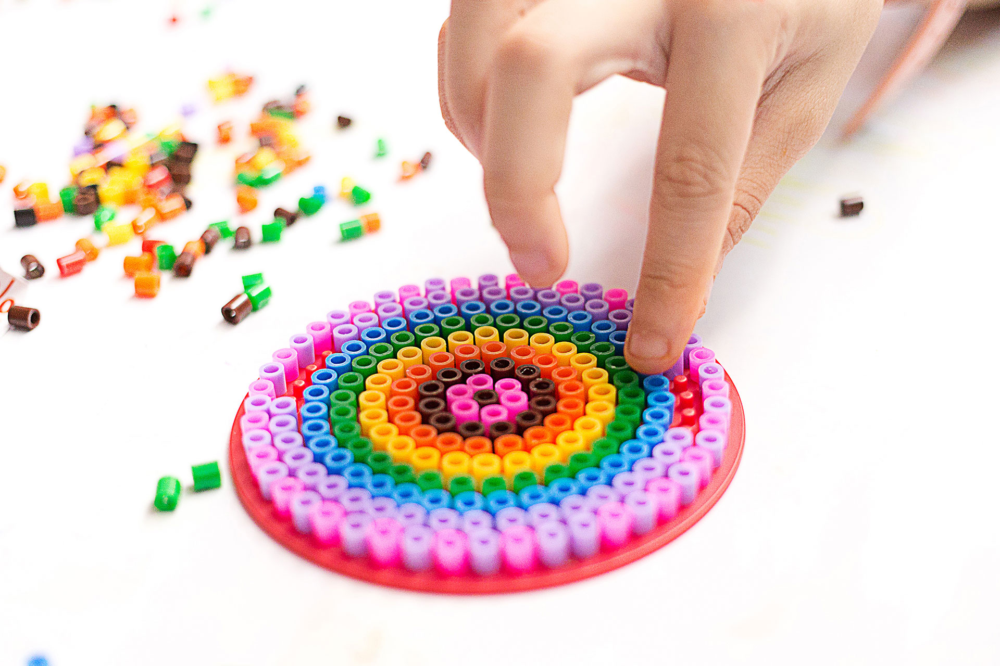

Creating Perler Bead Art is a fun and creative process that involves designing, arranging, and fusing colorful plastic beads to make various patterns and images. To start, you'll need a pegboard, which serves as the base where you place the beads. These boards come in different shapes and sizes, and they have small pegs that hold the beads in place. Begin by choosing a design, which can be a premade template or a pattern you create yourself. If you're new to Perler Bead Art, you might want to start with a simple design. Place the beads one by one on the pegboard according to the pattern, making sure each bead sits securely on its peg.
Once your design is complete, the next step is to fuse the beads together. This is done using an iron and special ironing paper that usually comes with the bead set. Carefully place the ironing paper over the bead design to protect it from direct heat. Set your iron to a medium setting without steam, and gently press it onto the beads. Move the iron in small circles to ensure even heat distribution. After a few seconds, check to see if the beads have started to melt and fuse together. Continue ironing until all the beads are fused, but be careful not to overheat and warp the design. Allow the design to cool for a minute before removing it from the pegboard.
The final step involves finishing touches to ensure your Perler Bead Art is perfect. Once cooled, gently peel the design off the pegboard. If you want both sides to have a fused look, you can place ironing paper on the reverse side and iron it lightly as well. Some artists like to add other elements, like magnets or keychain rings. To preserve or display your creation, you might consider framing it or using it as a decorative piece like coasters, ornaments, or wall art. With practice, you'll be able to create more complex and intricate designs, making Perler Bead Art a rewarding and versatile craft.